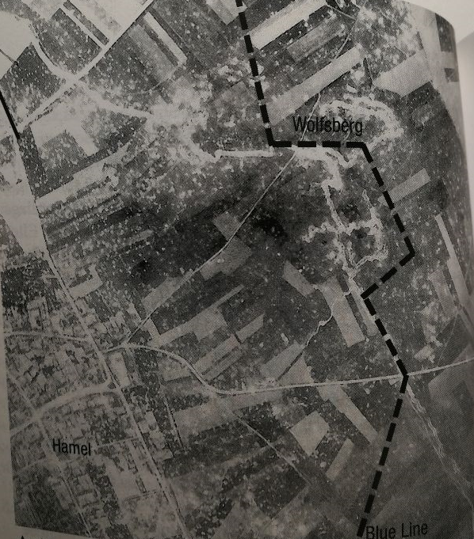
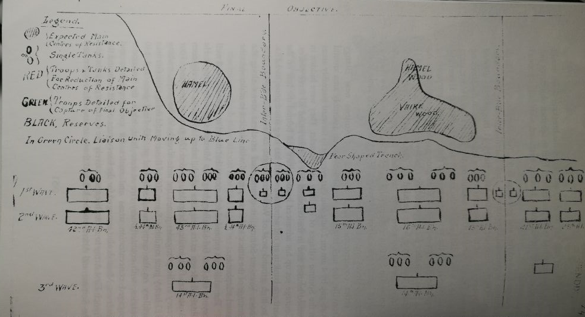

John Monash was one of the most important figures during the first world war. Using his military intelligence and creativity, Monash’s ingenious military tactics single handedly turned the tide of the war just as hope had begun to fade within the Allied troops.
The battle of Hamel, originally led by Field Marshal Douglas Haig, was an operation that saw the first use of mechanized weapons being used with infantry in tandem. This is considered by many as the first modern battle in the Great War. As technology advanced at a enormous pace, many of the powerful strategists in the military were left behind as their doctrines could not keep up with the pace that which new weapons are created everyday.

This was a huge problem to the extent that, many of the British senior commanders such as General Haig, often ordered troops to stick together in formations of 3 ranks, which is standard to the formations used back in the 1800s to attack a machine gun nest. It is without question, that many soldiers perished from the inexperience of the commanders in the future. However, of all the people in senior command, John Monash was one of the only generals who saw the potential in new technologies such as tank as well as patrol planes in order to gain an advantage on the German machine guns.
On the 4th of July, using all the resources he was given including planes, tanks, Australian infantry, artillery and the first American division, John Monash’s plan were able to take as well as hold the area around Hamel from German control in just 93 minutes. This was only 3 minutes longer than his original prediction of 90 minutes.

He was able to minimise the casualties during the Battle of Hamel with the help of the newly developed Mark V tanks as the infantry would stay behind tanks and eliminate any minor targets whilst the tanks acted as a shield and battery which could both protect infantry from fire as well as run over any gun emplacements or fortifications that the Germans had.
Using a combination of tanks and infantry, John Monash minimised the casualties during the Battle of Hamel as the infantry would stay behind tanks and eliminate any minor targets whilst the tanks acted as a shield and battery which could both protect infantry from fire as well as run over any gun emplacements or fortifications that the German had.
John Monash also invented the first crude by effective real time intelligence. The system, as the name suggests, allows the commanders behind the lines to know in real time, what is happening on the battlefield in order to make any changes to the plan if necessary. This was done through the use of patrol planes who would take photos and have a record of enemy and allied activity and drop that information onto a designated hotspot where a motorcycle squad will pick up the notes and transfer it to HQ. In essence, this meant that the generals had a clear picture of where their units had advanced to and how well the plan is going.
Though John Monash was without doubt an indispensable asset for the British, his British superiors did not take a liking to him at all. This can clearly be seen in the letter from Monash’s superior General Rawlinson (Laffin, 1999):
It is important to mention that 2 of Monash’s superiors including Rawlinson were both anti-Semitic and though Monash saw both men almost daily, they only talk behind his back to hide their anti-Semitism from him. This just goes to show that Monash’s military career did have obstacles he was unaware of but still managed as a result of his usefullness for the military. In fact, the 2nd superior, Field Marshal A.A. Montgomery, who was also anti-Semitic said this about John Monash (Laffin, 1999):
“I could name Sir John Monash as the best general on the Western Front in Europe. He possessed real creative originality, and the war might well have been over sooner and with fewer casualties, had Haig been relieved of his command and Monash appointed to command the British Army in his place.”
It just goes to show that even though both general and field marshal are anti-Semitic, they cannot ignore the significant contributions and results that John Monash has delivered for the British military.
The battle of Hamel was of a great importance for the Allies, as the meticulous planning made by Sir John Monash and his staff were so brilliant that the British command soon adopted their strategy and made it compulsory for every officer in the army to bring with them a booklet detailing the strategy and tactics that John Monash utilised in the Battle of Hamel.
In a war where both sides know only to throw bodies at each other, the battle of Hamel serves to demonstrate the capabilities and utility for the emerging technology at that time. It was essentially a playground for both mechanical and aerial units to show their effectiveness to their superiors.